Introdução à unidade
Nesta unidade, estudaremos os números decimais e as unida- des de medidas de comprimento. Ao utilizarmos as unidades de medidas de comprimento, pode- mos verificar na prática uma das situações em que os números de- cimais são bastante utilizados.
De acordo com Walle (2009, p. 362-404), algumas ideias são importantes no desenvolvimento dos conceitos de números deci- mais e de medidas de comprimen- to, são elas:
► Os números decimais são simplesmente outro modo de escrever frações. Am- bas as notações têm seu valor. Uma maior flexibili- dade é adquirida por meio da compreensão de como os dois sistemas simbóli- cos estão relacionados.
► O sistema numérico posicional de base dez se estende infinitamente em dois sentidos: para valores minúsculos como também para valores gigantescos. Entre quaisquer dois valores posicionais vizinhos, a razão 10 : 1 permanece a mesma.
► A vírgula decimal é uma convenção que foi desenvolvida para indicar a posição das unidades. A posição à esquerda da vírgula decimal é a unidade que está sendo contada como conjuntos ou unidades.
► As porcentagens são simplesmente centésimos e, como tal, são um terceiro modo de escrever frações e decimais.
► A adição e subtração com decimais estão baseadas no conceito fundamental de adicionar e subtrair números em valores posicionais - uma extensão dos números inteiros.
► Medir envolve uma comparação de um atributo de um objeto ou situação
UNIDADE 6 - Medidas de comprimento e números decimais
Tartaruga-de-Pente. Praia da Feiticeira. Ilhabela, SP, 2021.
Nascimento
1 - SAINDO DO NINHO
Depois de rasgar a casca do ovo com a carúncula, que fica na ponta do bico, o filhote sobe até a superfície da areia e procura a luminosidade do horizonte para alcançar o mar
2 - NO MAR
Se orienta pela ondulação que a afasta da costa e pelo campo magnético terrestre
... e demora mais 3 ou 4 dias para o filhote sair do ovo e subir à superfície
► Medir significativamente e estimar medidas dependemàde
► Estimar medidas e areia desenvolver referências pessoais para as unidades de medida comumente usadas ajuda os alunos a aumentar sua familiaridade com as unidades, previne erros em medidas ajuda no uso significativo de medida.
A seguir, relacionamos os objetivos que se pretende atingir ao estudar os conceitos desta unidade.
204
Capítulo 1 – Algumas unidades de medidas de comprimento e números decimais
Objetivos:
► Reconhecer diferentes formas de medir comprimentos.
► Identificar uma fração decimal.
► Reconhecer a parte inteira e a parte decimal em um número decimal.
► Transformar frações decimais em números decimais e vice-versa.
► Ler e escrever números decimais.
► Comparar números decimais.
► Resolver situações-problema que envolvam números decimais.
Capítulo 2 – As medidas de comprimento e o sistema métrico decimal
Objetivos:
► Reconhecer o metro como unidade-padrão de medida de comprimentos.
► Estimar medidas de comprimento.
► Utilizar instrumentos para medir comprimentos.
Capítulo 3 – Operações com números decimais
Objetivos:
► Resolver situações-problema que envolvam as operações com números decimais.
► Realizar adições, subtrações, multiplicações e divisões envolvendo números inteiros e números decimais.
► Calcular a multiplicação e divisão de números decimais por 10, 100 e 1 000.
► Transformar as unidades de medidas de comprimento mais usuais.
► Calcular a potência de um número decimal com expoente natural.
► Resolver situações-problema envolvendo porcentagens.
DETERMINANDO O SEXO
O sexo da tartaruga marinha é determinado pela temperatura da areia onde os ovos repousam. O ideal para o nascimento da mesma quantidade de machos e fêmeas é de 28,74ºC
De cada 120 ovos de tartaruga marinha, geralmente 90 nascem (75%) e chegam ao mar. A perda de 25% se deve à incapacidade de cavar a areia acima de si para chegar até a superfície, à não fertilização de alguns ovos e à temperatura inadequada para o desenvolvimento embrionário
CONVERSE
1. Qual o assunto abordado no infográfico?
O nascimento e o sexo das tartarugas cabeçudas que se reproduzem
no litoral brasileiro.
2. Você conhece no Brasil algum projeto de preservação ambiental que
cuida para que essa espécie de tartaruga não entre em extinção? Para
você, qual a importância desse tipo de projeto?
No Brasil, temos o projeto Tamar que cuida da preservação de
cinco espécies de tartaruga. Para mais informações sobre o projeto
pode-se acessar o site www.projeto.tamar.org.br.
3. O infográfico sobre o nascimento das tartarugas nos mostra várias informações por meio de números. Todos os números que aparecem nele são naturais? Não.
4. Quais números você identificou que não são naturais? Como são chamados? 3,5 cm e 28,74ºC. Números decimais.
5. Alguns números no infográfico nos mostram medidas de comprimento. Quais são eles e o que representam? 50 cm (profundidade em que são colocados os ovos), 40 cm (largura do buraco onde são colocados os ovos), 30 cm (abertura do buraco por onde as tartarugas saem em direção ao mar), 3,5 a 4 cm (tamanho do filhote).
Probabilidade e estatística – Construção de gráficos usando software de planilha eletrônica
Objetivos:
► Construir gráficos usando software de planilha eletrônica.
Orientações específicas
Na abertura da unidade, apresentamos um infográfico sobre a reprodução da tartaruga cabeçuda que desova em uma faixa do litoral brasileiro. Nele, são apresentadas informações que envolvem números naturais, decimais e porcentagens. Pretende-se explorar o significado desses números e mostrar aos alunos a sua utilização. Pode-se fazer uma relação das informações apresentadas com os conceitos estudados na unidade sobre números fracionários.
205
No nosso cotidiano, encontramos inúmeras situações nas quais precisamos realizar medições. Medir grandezas tem por objetivo quantificar essas situações. Os conceitos de medida e grandeza são inseparáveis. As grandezas são características dos objetos que podem ser comparadas objetivamente e cujas medidas podem ser adicionadas ou subtraídas. Medir é comparar uma quantidade de uma grandeza qualquer com outra quantidade da mesma grandeza que se escolhe como “unidade”.
Neste capítulo, abordamos algumas unidades de medidas utilizadas para medir comprimento. O comprimento de dois ou mais objetos podem ser comparados, essa comparação pode ser feita a olho nu ou utilizando determinados instrumentos. Por exemplo, ao olharmos o comprimento de um lápis e o de uma régua de 30 cm, verificamos facilmente que a régua é mais comprida. Porém, se ao olharmos e não for possível distinguir qual é mais comprido ou mais curto, podemos utilizar instrumentos próprios para realizar essas medições.
A seguir, apresentamos uma linha do tempo na qual são mostradas várias formas de medidas, não somente as medidas de comprimento que serão o nosso foco de estudo nesse momento mas outras medidas também, para auxiliá-lo na apresentação deste tema. A primeira unidade de medida apresentada é o cúbito, que é definido como sendo a medida de comprimento do cotovelo à extremidade do dedo médio distendido, sendo considerado o “cúbito real”.
CAPÍTULO 1 - Algumas unidades de medidas de comprimento e números decimais
Introdução às medidas de comprimento e aos números decimais
Os sistemas de medidas tornaram-se fundamentais a partir do momento em que a sociedade começou a comercializar coisas, construir estruturas e a assumir a propriedade da terra. As primeiras civilizações precisavam medir distâncias, áreas, volumes e tempo. Então, criaram formas de medir, conhecidas como unidades de medidas. Grande parte das unidades de medidas utilizadas hoje tiveram origem na antiga Babilônia, Egito e Império Romano.
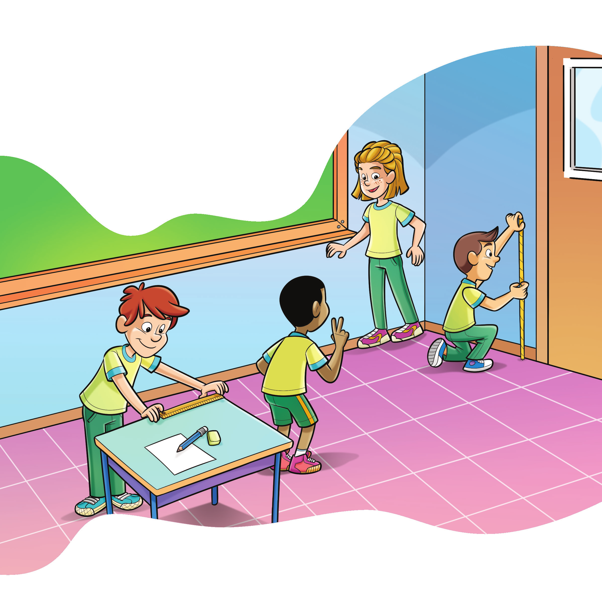
1. Troque ideias com um colega e com seu professor, em seguida, escrevam no caderno algumas unidades de medidas, para medir comprimentos que vocês conhecem e que são utilizadas nos Estados Unidos, na Inglaterra e que são pouco usadas no Brasil. Pés, milhas, polegadas, jardas.
2. No Brasil, utilizamos o Sistema Métrico Internacional. Quais são as unidades de medidas de comprimento mais comuns utilizadas nesse sistema? Converse com seu colega e escrevam no caderno as unidades de medidas que vocês conhecem. Quilômetro, metro, centímetro, milímetro.
206
Uma linha do tempo dos pesos e medidas
c. 3000 a.C.
Os Egípcios desenvolvem um padrão real para sua medida básica de comprimento, o cúbito.
c. 220 a.C.
O primeiro imperador chinês, Shi Huang Di (r. 221-209/210 a.C.), padroniza todos os pesos e medidas, especificando até o comprimento exato dos eixos a serem usados nas carroças.
c. 800
O Sagrado Imperador Romano, Carlos Magno (r. 718-814), tenta regular os pesos e medidas.
960
O primeiro rei de toda a Inglaterra, King Edgar (r. 957-975), decreta que pesos e medidas devem estar de acordo com um padrão mantido em Londres.
1215
Um padrão nacional inglês para pesos e medidas é estabelecido e incluído na Magna Carta, o alvará foi concedido por King John (1199- 1216).
1266
Henrique III fixa a relação entre dinheiro e peso na moeda Inglesa, atribuindo a um penny o peso de 32 grãos de trigo e 240 pence formando a libra (pound).
1352
Eduardo III, da Inglaterra, estabelece que uma Stone é igual a 14 pounds (libras), um valor que permanece até os dias de hoje.
1496
Novo padrão para pesos e medidas é lançado na Inglaterra.
1588
Novos padrões são lançados por Elizabeth I na Inglaterra (r. 1558- 1603).
1668
John Wilkins propõe um sistema métrico universal de pesos e medidas na Inglaterra.
1670
Gabriel Mounton propõe um sistema métrico de pesos e medidas na França.
1707
Um galão de vinho é definido como 231 polegadas cúbicas. A medida havia sido utilizada desde o tempo de Edward I (r. 1272-1307), mas a lei de 1707 fixou o tamanho.
1790
A primeira mensagem de George Washington ao Congresso estabelece a necessidade de “uniformidade na moeda, pesos e medidas”; o Congresso adota o sistema de pesos e medidas inglês.
Vamos conhecer algumas unidades de medidas utilizadas para medir comprimentos.
Polegada: 1 polegada (1”) corresponde a 2,54 cm. Essa unidade de medida é muito utilizada para indicar o comprimento da diagonal da tela de um aparelho de TV. Observe uma TV de 55”.
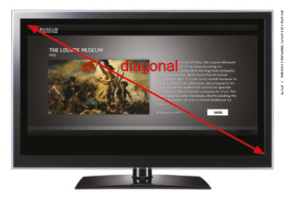LG / wikimedia.commons
Pé: 1 pé corresponde a 30,48 cm. Essa unidade de medida é utilizada pela Ae-ronáutica para indicar a altitude dos voos.

Farnborough, Reino Unido,
2017.
A altitude de cruzeiro de um voo comercial, em longas distâncias, é de aproximadamente 43 000 pés. Farnborough, Reino Unido, 2017.
Jarda: 1 jarda corresponde a 91,44 cm. A jarda inglesa, com origem na palavra Yard, que significa varas, foi definida como sendo a distância entre a ponta do nariz do rei Henrique I e a ponta do seu dedo polegar, com o braço esticado. Para garantir esse padrão foram construídas barras metálicas de 1 jarda para serem usadas como referência. Essa unidade de medida é utilizada, por exemplo, para demarcar as distâncias em um campo de futebol americano.
elisfkc/wikimedia.commons
Estádio de Futebol Americano. Orlando, Flórida, EUA, 2018.
1799
São definidos padrões para o sistema métrico em Paris, França.
1824
Redefinição dos pesos e medidas no Reino Unido, levando em conta pela primeira vez as condições nas quais as quantidades devem ser pesadas e medidas ao estabele- cer os padrões.
1866
A Lei Métrica (Metric Act) permite o uso do sistema métrico nos Estados Unidos.
1878
A jarda é redefinida no Reino Unido.
1960
O novo Système International d´Unités (Sistema Internacional de Unidades ou SI) é formulado em Paris, França, na 11.ª Confe- rência Geral de Pesos e Medidas.
207
As unidades de medidas apresentadas no início do capítulo são mais utilizadas em países de língua inglesa, porém também são usadas no Brasil, embora não sejam tão comuns. Elas geralmente são aplicadas em casos específicos, como a polegada, para indicar a diagonal de uma TV ou a espessura de um cano. Ao estudarmos essas unidades, podemos relacioná-las ao sistema métrico decimal, que é o mais utilizado no Brasil. Nas transformações dessas unidades para o sistema métrico decimal, vemos o uso frequente de números decimais.
No estudo dos números decimais, o material dourado pode ser um forte aliado para se entender os conceitos de décimos, centésimos e milésimos, assim como o nosso sistema monetário.
Utilizando o material dourado, proponha várias situações nas quais os alunos representem os números na forma de números fracionários e números decimais.
Milha terrestre: 1 milha terrestre corresponde a 1,609 km. Essa unidade de medida é muito utilizada para indicar grandes distâncias em alguns países como Estados Unidos e Inglaterra e foi definida pelo Sistema Imperial de Medidas, também conhecido como sistema inglês. Nesse sistema, os valores de medidas eram determinados pelos reis ingleses.

Rodovia, Flórida, EUA, 2018.
Milha Náutica: 1 milha náutica corresponde a 1,852 km. Essa unidade de medida foi determinada utilizando-se aspectos científicos. Ela é utilizada na navegação.
Vimos algumas unidades de medidas que são usadas em casos espe-cíficos. Para representar essas medidas em centímetros ou quilômetros utilizamos números decimais.
Décimos, centésimos e milésimos
Para entender melhor os números com vírgula vamos utilizar o Material Dourado. Vamos considerar o cubo como sendo 1 unidade.
1 unidade
1.º Vamos dividir o cubo em 10 partes iguais. Note que cada placa corresponde a 1/10 do cubo inicial.
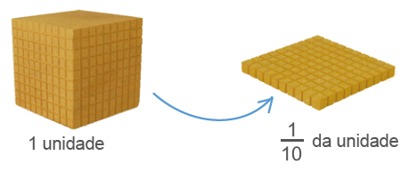A fração 1/10 corresponde ao número decimal 0,1 (lemos “um décimo”).
208
2.º Agora vamos dividir o cubo em 100 partes iguais. Note que cada barra corresponde a 1/100 do cubo inicial.

A fração 1/100 corresponde ao número decimal 0,01 (lemos “um centésimo”).
3.º A seguir, dividiremos o cubo em 1 000 partes iguais. Note que cada cubinho corresponde a 1/1000 do cubo inicial.
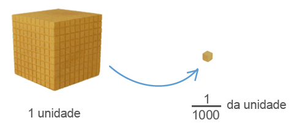A fração 1/1000 corresponde ao número decimal 0,001 (lemos “um milésimo”).
As frações 1/10, 1/100 e 1/1000 são chamadas de frações decimais.
Toda fração cujo denominador é uma potência de base 10 é chamada de fração decimal.
São exemplos de frações decimais:
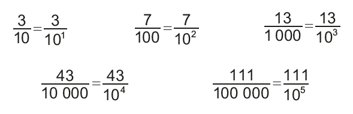209
Leitura de números decimais
O sistema de numeração decimal é posicional, por isto é importante a correta leitura destes números.
Além dos números apresentados no quadro de ordens, mostre aos alunos outros números decimais para que façam o registro no caderno de como se lê. O quadro de ordens ajuda na visualização da posição que cada algarismo ocupa.
Aproveite os números apresentados no livro 3,5; 8,29 e 13,462 para mostrar como os números decimais podem ser decompostos:
3,5 = 3 + 0,5
8,29 = 8 + 0,29
8,29 = 8 + 0,2 + 0,09
13,462 = 13 + 0,4 + 0,06 + 0,002
13,462 = 13 + 0,462
13,462 = 13 + 0,4 + 0,062
Outra proposta de trabalho é solicitar que eles pesquisem uma reportagem sobre temas em que o uso de números decimais é constante. Um tema que pode ser abordado é o esporte. Em vários deles o tempo é o fator determinante para o bom desempenho do atleta. No caso da Fórmula 1, por exemplo, são considerados milésimos de segundo.
Assim como representamos os números naturais em um quadro que mostra o valor posicional, também podemos representar números decimais em um quadro de ordens do sistema decimal.
![Tabela com oito linhas e nove colunas. A linha 1 apresenta as duas principais divisões da tabela: Parte inteira. Parte decimal. Uma coluna de vírgulas divide as duas partes. Linha 2, da Parte inteira, da esquerda para a direita: ..., Centena C, Dezena D, Unidade U. Linha 2: da parte decimal: Décimo d, Centésimo c, Milésimo m, ... Linha 3: na coluna de Unidade: zero. Na coluna do Décimo: 1. Linha 4: na coluna da Unidade: zero. Na coluna do Décimo: zero. Na coluna do centésimo: 1. Linha 5: na coluna da Unidade: zero. Na coluna do Décimo: zero. Na coluna do centésimo: 0. Na coluna do milésimo: 1. Linha 6: na coluna da unidade: 3. Na coluna do décimo: cinco. Linha 7: na coluna da unidade: oito. Na coluna do décimo: 2. Na coluna do centésimo: 9. Linha 8: Na linha da dezena: 1. Na coluna da unidade: 3. Na coluna do décimo: 4. Na coluna do centésimo: 6. Na coluna do milésimo: 2.](../../resources/images/212tb.PNG)
Veja como lemos cada um dos números:
► 0,1 → um décimo.
► 0,01 → um centésimo.
► 0,001 → um milésimo.
► 3,5 → três inteiros e cinco décimos.
► 8,29 → oito inteiros e vinte e nove centésimos ou oito inteiros, dois décimos e nove centésimos.
► 13,462 → treze inteiros e quatrocentos e sessenta e dois milésimos ou treze inteiros, quatro décimos, seis centésimos e dois milésimos.
Fazendo transformações
Situação 1
Observe a seguir como transformar o número decimal 2,3 em fração decimal.
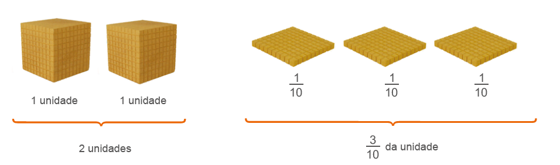Dessa forma, temos:
2 + 3/10 = 20/10 + 3/10 = 23/10 → fração decimal
210
Fazendo transformações
Os números decimais podem ser transformados em frações decimais e vice-versa.
Com o apoio do material dourado, proponha aos alunos que escrevam frações decimais no caderno e usando o material mostrem quanto representam as partes das barras, placas em relação ao cubo que está dividido em mil cubinhos. Em seguida, sugira aos alunos que transformem estas frações decimais em números decimais.
Sugestão de atividade
1. Observe as peças do material dourado:
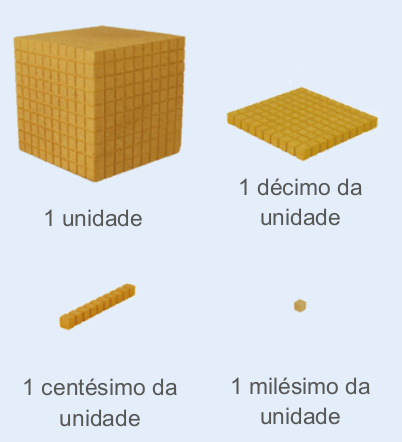Usando como referência as informações acima, escreva a fração decimal que representa cada agrupamento mostrado a seguir.
a) 4/1000
b) 6/100
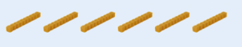c) 2/10
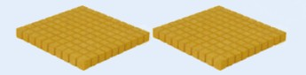d) 32/100
De maneira prática, tem-se:
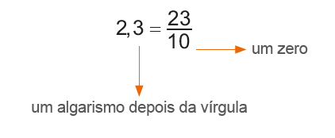Situação 2
Veja como transformar o número decimal 3,24 em fração decimal.
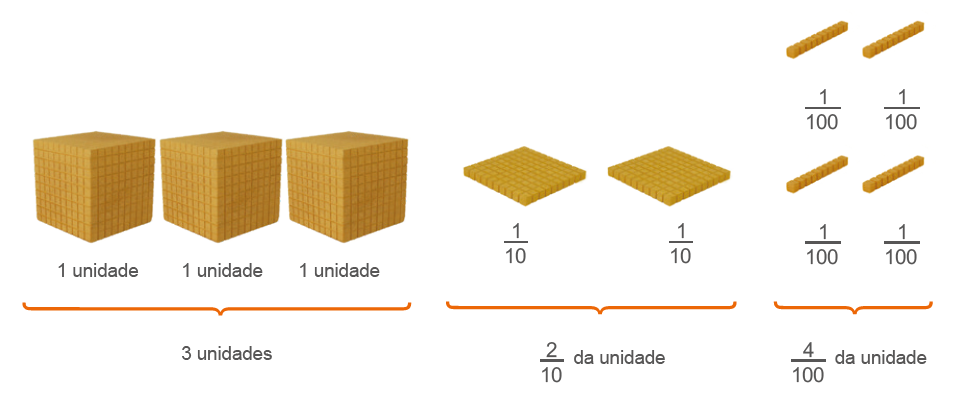Dessa forma, temos:
3 + 2/10 + 4/100 = 300/100 + 20/100 + 4/100 = 324/100 → fração decimal
De maneira prática, tem-se:
Situação 3
Observe como transformar a fração decimal 114/1004 em número decimal.
114/100 = 100/100 + 14/100 = 1 + 14/100 = 1,14
De maneira prática tem-se:

e)
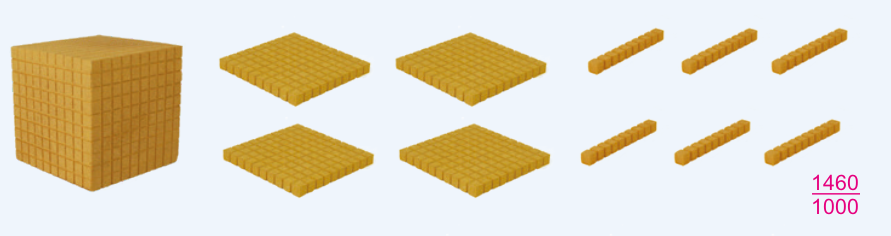f)
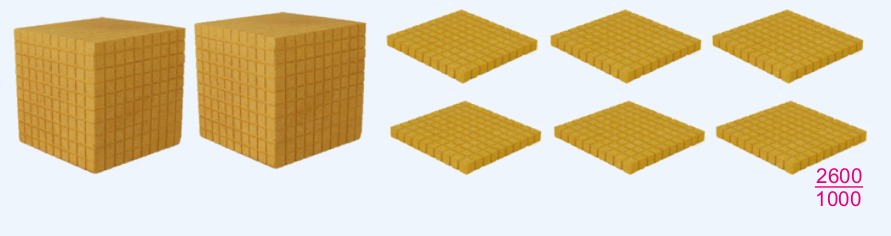211
Comparando números decimais
A reportagem a seguir refere-se ao treino do Grande Prêmio de Fórmula 1 do Brasil em 2014. Veja como ficou o grid de largada.
Nico domina Hamilton e faz a pole em Interlagos. Massa supera Bottas e é 3.º
No que depender da habilidade de Nico Rosberg em treinos classificatórios, a disputa com o companheiro Lewis Hamilton pelo título mundial ainda está longe do fim.
Após dominar todos os treinos livres do GP do Brasil, o alemão manteve a supremacia na pista de Interlagos e garantiu o direito de largar na posição de honra do grid na corrida deste domingo. Líder do campeonato, Hamilton chegou ameaçar a pole do parceiro.
Em um fim de treino emocionante, chegou a aparecer em primeiro nos instantes finais com 1min 10s 056, mas foi desbancado por Rosberg, que cravou 1min 10s 023. Exímio conhecedor da pista, Felipe Massa confirmou o bom momento [...] terminou em terceiro, na frente de Valtteri Bottas, que terminou em 4.º.
[...] SIQUEIRA, Felipe; MOREIRA, Túlio. Nico domina Hamilton e faz a pole em Interlagos. Massa supera Bottas e é 3.º. Globo Esporte, 8 nov. 2014, São Paulo. Disponível em: https://cutt.ly/RS6PqxY. Acesso em: 15 mar. 2022.
1. Converse com um colega e verifique se ele já assistiu a uma corrida de Fórmula 1 pela televisão. Se sim, qual foi a corrida e o que ele observou sobre ela?
2. Troque ideias com seu colega e escrevam no caderno como se lê cada um dos tempos mencionados na reportagem.
3. Como vocês podem observar, a diferença do tempo entre os dois pilotos foi de milésimos de segundo. Comparando os dois tempos, quem teve o maior tempo?
Vejamos agora uma propriedade fundamental dos números decimais.
Considerando o cubo como sendo uma unidade, abaixo temos representados três números decimais.

4. Troque ideias com um colega e representem as frações decimais em cada uma das situações. Em seguida, transformem essas frações em números decimais.
a) Os números decimais encontrados representam a mesma quantidade?
b) Quando acrescentamos ou suprimimos zeros à direita da parte decimal desses números decimais, os valores deles se alteraram?
Atividade 4
A : 1/10 = 0,1 B : 10/100 = 0,10 C: 100/1000 = 0,100
a) Como as frações encontradas são equivalentes, os números decimais também representam a mesma quantidade.
b) Ao acrescentar ou suprimir zeros, os valores não se alteram.
Professor, nessa situação foi apresentado somente um exemplo. Em sala de aula, você, utilizando o material dourado, pode mostrar outras frações decimais para exemplificar.
Por exemplo:
2/10 = 20/100 = 200/1000; 3/10 = 30/100 = 300/1000; 4/10 = 40/100 = 400/1000; etc
212
Representação de números decimais na reta numérica
Antes de apresentar a representação de números decimais na reta numérica, retome a representação de números naturais e números fracionários.
Além da régua como instrumento para desenhar a reta numérica, pode-se solicitar aos alunos que usem papel milimetrado. Desta forma, eles terão mais precisão na representação dos números decimais.
É importante que eles percebam que ao representar um número decimal na reta numérica, tanto a parte inteira quanto a parte decimal do número devem ser representados.
Para comparar dois números decimais, primeiro verificamos a parte inteira. O número que apresenta a maior parte inteira é o maior número. Porém, quando a parte inteira de dois números decimais é igual, então comparamos a parte decimal. Para facilitar a comparação, podemos igualar o número de casas decimais acrescentando zeros à direita. Ao suprimir ou acrescentar zeros à direita da parte decimal de um número, o valor desse número não se altera.
Exemplos:
A = 1,5; B = 2,75; C = 0,75; D = 4,25
► 1,50 > 0,75
► 2,75 < 4,25
► 1,50 < 2,75
Representação de números decimais na reta numérica
Ao comparar números decimais, podemos usar a reta numérica para nos ajudar a identificar qual número é maior ou menor, por isso vamos ver como representar um número decimal na reta numérica.
A fração decimal 1/10 corresponde ao número decimal 0,1 e indica a déci-ma parte de 1 inteiro. Vamos localizar esse número decimal na reta numérica, dividindo a parte inteira em 10 partes iguais. Esse número é maior que zero e menor que 1.

Observe a localização de outros números decimais na reta numérica.
► 0,5
► 1,2
► 2,3
► 0,8
► 1,6
► 2,7
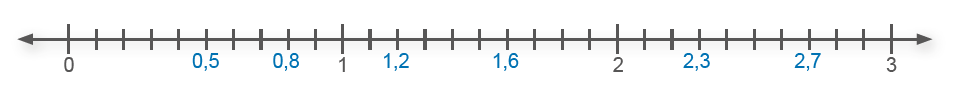Note que 0,8 é maior que 0,5; 2,3 é maior que 1,6, ou seja, a partir do número zero, um número que se encontra a direita de outro número, na reta numérica, é maior que o número anterior.
Também podemos usar a reta numérica para representar centésimos.
Neste caso, devemos dividir o inteiro em 100 partes iguais. Observe a localização dos números decimais abaixo na reta numérica.
► 3,05
► 3,35
► 3,78
► 3,17
► 3,56
► 3,91

Sugestão de atividade
1. Solicite aos alunos que desenhem uma reta numérica de 0 a 10 dividindo cada intervalo em 10 partes iguais. Escolha alguns intervalos em que eles devem representar números decimais na reta numérica a partir do seu comando, por exemplo:
a) Represente na reta numérica um número decimal compreendido entre 5 e 6. Escreva este número decimal também na forma de número fracionário.
b) Represente na reta numérica um número decimal compreendido entre 3 e 3,5. Escreva este número decimal também na forma de número fracionário.
c) Represente na reta numérica um número decimal compreendido entre 7,2 e 8,4. Escreva este número decimal também na forma de número fracionário.
2. Com o apoio de uma régua, solicite aos alunos que meçam o comprimento, em centímetros, de um lápis de cor, de uma caneta, da largura do livro e escrevam estas medidas no caderno usando números decimais. Logo, cada uma destas medidas pode ser representada na reta numérica.
213
Atividade 1
No Brasil, a unidade do sistema monetário é o real, porém esta unidade varia de acordo com o país. Em cada um deles há uma instituição pública responsável por imprimir as moedas e cédulas que serão usadas. No Brasil, o responsável por esta tarefa é o Banco Central do Brasil.
Converse com os alunos a respeito das moedas e cédulas vigentes na atualidade. Proponha uma pesquisa para conhecerem um pouco da história do sistema monetário brasileiro e, posteriormente, usando cédulas e moedas sem valor, fabricadas em papel ou ainda usando desenhos, representem os valores que você irá dizer. É uma excelente oportunidade para os alunos perceberem as possíveis combinações que podem ser feitas a partir das cédulas e moedas disponíveis em circulação.
Sugestões:
a) R$ 24,25
b) R$ 75,50
c) R$ 146,99
d) R$ 200,10
Converse a respeito das combinações feitas para representar cada um dos valores. Verifique de quantas maneiras diferentes foram representados cada um dos valores e discuta sobre as combinações que fizeram.
Atividade 2
Como apoio para a resolução da atividade 2, solicite aos alunos que utilizem peças do material dourado.
ENCONTRE SOLUÇÕES
1. O real é a unidade do sistema monetário brasileiro. Ele começou a ser usado em 1994 em substituição ao Cruzeiro Real.
a) Quantos centavos são necessários para termos 1 real? 100 centavos.
b) Um centavo corresponde a qual fração do real? 1/100
c) Em seu caderno, copie a tabela a seguir e complete-a com a fração decimal e o número decimal que cada moeda representa em relação a 1 real.
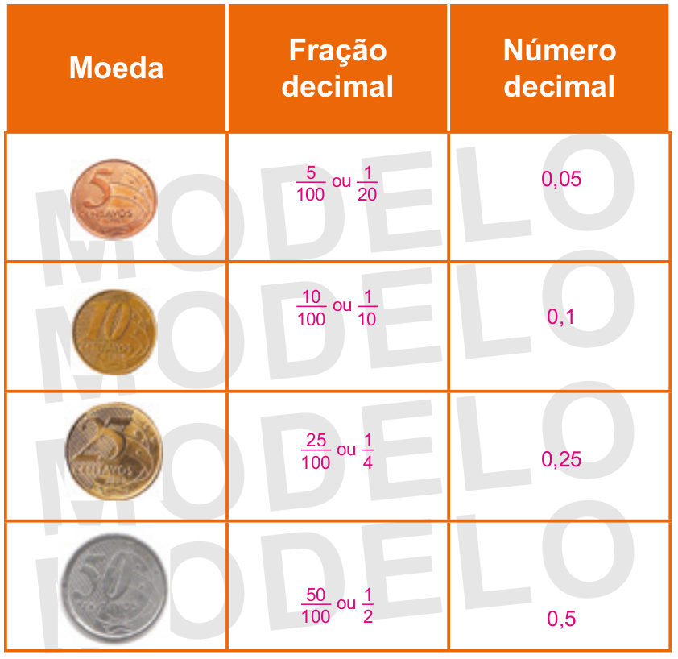d) No caderno, escreva as quantias representadas em cada item.
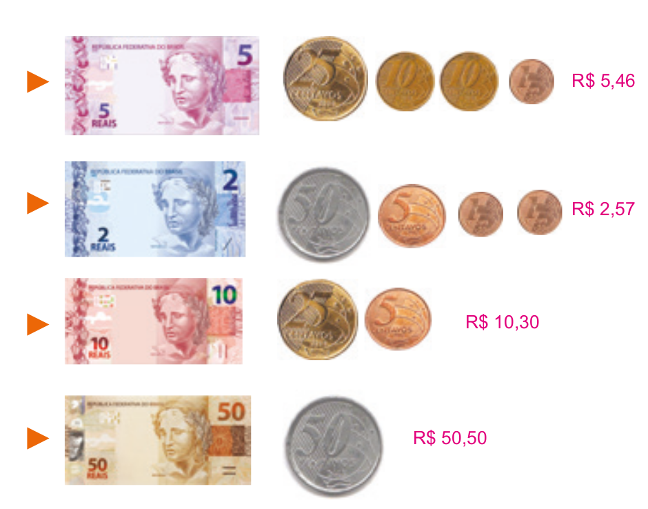 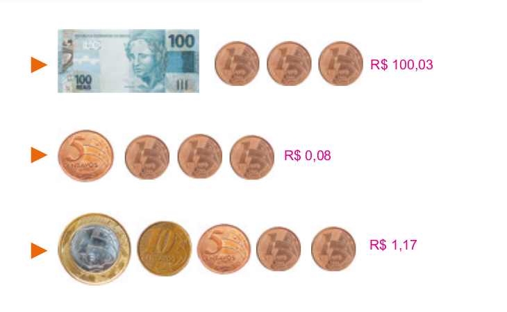2. Veja a seguir as peças do Material Dourado.
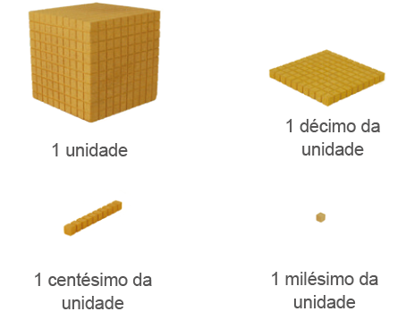► Considerando as peças como referência, em seu caderno, registre as frações decimais e os números decimais representados abaixo. Depois escreva como se lê cada um deles.
a)
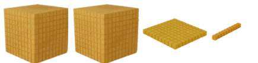 211/100 = 2,11 Dois inteiros e onze centésimos.b)
 3/10 = 0,3 Três décimos..
3/10 = 0,3 Três décimos..
c)
 4/100 = 0,04 Quatro centésimos.
4/100 = 0,04 Quatro centésimos.
d)
112/1000 = 0,112 Cento e doze milésimos.214
Nas atividades 8, 9 e 10 os alunos podem usar papel quadriculado ou milimetrado para auxiliar no desenho da reta numérica.
Nas atividades 9 e 10, após a representação dos números decimais na reta numérica, solicite aos alunos que os escrevam na ordem crescente e decrescente. Explore com eles a comparação entre os números decimais.
e)
 5/1000=0,005 Cinco milésimos.
5/1000=0,005 Cinco milésimos.
f)
 121/100=1,21 Um inteiro e vinte e um centésimos.
121/100=1,21 Um inteiro e vinte e um centésimos.
g)
204/1000 = 0,204 Duzentos e quatro milésimos.h)
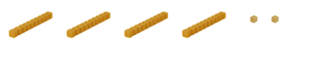 42/1000 = 0,042 Quarenta e dois milésimos.3. Em seu caderno, escreva as frações decimais na forma de números decimais.
a) 15/10 1,5
b) 8/100 0,08
c) 11/1000 0,011
d) 349/100 3,49
e) 537/10 53,7
f) 7/1000 0,007
g) 621/10000 0,0621
h) 19/100000 0,00019
4. No caderno, transforme os números decimais em frações decimais.
a) 0,068 68/1000
b) 0,9 9/10
c) 14,05 1405/100
d) 8,03 803/100
e) 0,0002 2/10000
f) 1,007 1007/1000
g) 7, 943 7943/1000
h) 2,5 25/10
5. Em seu caderno, copie os números decimais a seguir, compare-os e substitua o símbolo ▪ pelos sinais >, < ou =.
a) 1, 09 ▪ 1,90 <
b) 0,32 ▪ 0,320 =
c) 2,25 ▪ 3,25 <
d) 8,080 ▪ 0,008 >
e) 4,60 ▪ 4,600 =
f) 5,350 ▪ 5,530 <
g) 8,3 ▪ 8,03 >
h) 0,06 ▪ 0,061 <
6. Cada situação a seguir representa um número. No caderno, identifique os números que representam a mesma quantidade.
► 2,8 b,c,d
a) 2,08
b) 28/10
c) 2,80
d) 280/100
► 0,03 a e c.
a) 0,030
b) 30/100
c) 30/1000
d) 0,3
7. Nas olimpíadas de Londres, em 2012, na prova de natação 400 m medley masculino os 3 primeiros colocados foram:
► Kosuke Hagino (Japão) - 4 min 8 s 94
► Ryan Lochte (EUA) - 4 min 5 s 18
► Thiago Pereira (Brasil) - 4 min 8 s 86
Quem ganhou a medalha de ouro, prata e bronze?
Ryan Lochte (EUA) − ouro, Thiago Pereira (Brasil) − prata, Kosuke Hagino (Japão) − bronze.8. Nas retas numéricas abaixo, os pontos representam um número decimal. Escreva em seu caderno o número decimal que cada ponto representa.
a)
 A: 0,6; B: 1,9; C: 2,2
A: 0,6; B: 1,9; C: 2,2
b)
 D: 4,9; E: 5,4; F: 6,1; G: 6,7
D: 4,9; E: 5,4; F: 6,1; G: 6,7
c)
 M: 12,2; N: 13,5; O: 14,3; P: 14,9
M: 12,2; N: 13,5; O: 14,3; P: 14,9
9. Em seu caderno, escreva as frações decimais na forma de números decimais e localize-os na reta numérica.
► 3/10 0,3
► 70/100 0,7
► 130/100 1,3
► 25/10 2,5
10. Escreva os números decimais abaixo na forma de frações decimais e localize essas frações na reta numérica.
► 2,1 21/10
► 0,8 8/10
► 3,3 33/10
► 0,9 9/10
Atividade 9
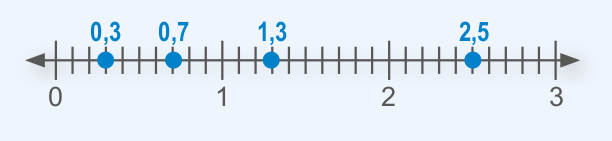Atividade 10
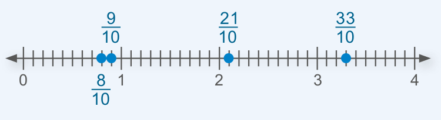215